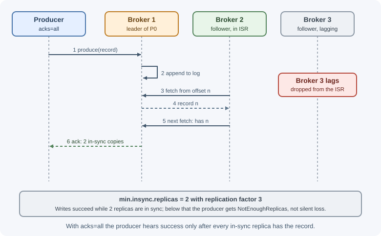
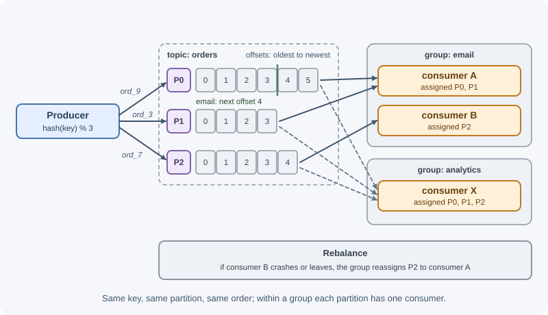

Apache Kafka¶
Apache Kafka is a distributed event-streaming platform built around a durable, append-only log. Producers append records to topics; consumers read them in order and keep track of their own position. Unlike a classic queue, Kafka does not delete a record when it is read: records stay for a configured retention period, so many independent consumers can read, and re-read, the same stream.
Why it matters¶
- High throughput: Kafka handles very large volumes of events by writing sequentially to disk, batching, and spreading partitions across brokers.
- Many readers, one stream: analytics, search indexing, fraud detection,
and notifications can all consume the same
orderstopic at their own pace without affecting each other. - Replay: a new service can start from the beginning of retained history; a buggy consumer can rewind and reprocess after a fix.
- Ordering per key: all events for one customer or order can be processed in sequence.
- It is the backbone for event-driven architectures, change data capture, and stream processing in many companies.
Real-world usage¶
- LinkedIn. In a 2015 post, LinkedIn described Kafka as the circulatory system of its data: over 800 billion messages per day (more than 175 TB written and over 650 TB consumed daily), split into separate clusters for queuing, metrics, logs, and tracking data. Many consumers reading the same data is why Kafka's multi-consumer design mattered (LinkedIn Engineering).
- Netflix Keystone. Netflix's Keystone platform combines a Kafka-based messaging service with routing and stream processing to collect, process, and move microservice events in near real time, at a scale of trillions of events per day (Netflix TechBlog).
- Cloudflare. Cloudflare has used Kafka since 2014 to decouple microservices, announcing the creation, change, or deletion of resources in a common data format; it reported 14 clusters with roughly 330 nodes and over a trillion messages processed (Cloudflare blog).
- Wikimedia. Wikimedia runs several Kafka clusters: "main" clusters for critical, lower-volume production services such as its event platform and change propagation, and a "jumbo" cluster carrying high-volume web-request and analytics data into Hadoop (Wikitech).
- Shopify. Shopify rebuilt its change data capture on Kafka Connect and Debezium, turning database changes into an append-only stream of events in Kafka that feeds services such as merchant analytics (Shopify Engineering).
Popular tools and providers: Apache Kafka (self-managed), Confluent Cloud and Confluent Platform, Amazon MSK, Aiven for Apache Kafka, Kafka-compatible platforms such as Redpanda and Azure Event Hubs (Kafka endpoint), and ecosystem tools such as Kafka Connect, Debezium, Kafka Streams, and Apache Flink.
How it works¶
The log model¶
A Kafka topic is a named stream of records. Each topic is split into partitions, and each partition is an ordered, immutable, append-only log. Every record in a partition gets a sequential offset.
Topic "orders" with 3 partitions
Partition 0: | 0 | 1 | 2 | 3 | 4 | 5 | <- new records appended here
Partition 1: | 0 | 1 | 2 | 3 |
Partition 2: | 0 | 1 | 2 | 3 | 4 |
^
consumer group "email" has read partition 2 up to offset 2
- Records are never modified; they are appended and later deleted by retention.
- Offsets are per partition. "Offset 3" means nothing without a partition.
- A record has a key, a value (bytes, often JSON, Avro, or Protobuf), headers, and a timestamp.
Brokers and clusters¶
A broker is a Kafka server. A cluster is several brokers. Partitions are spread across brokers so that storage and load are shared, and a topic can be larger than any single machine.
Since Kafka 4.0, clusters run in KRaft mode: a quorum of controller nodes using a Raft-based protocol manages cluster metadata (topics, partitions, leaders). Earlier versions relied on a separate Apache ZooKeeper ensemble; ZooKeeper support was removed in 4.0.
Replication: leaders, followers, and in-sync replicas¶
Each partition is copied to several brokers, set by the replication factor (3 is common in production).

- One replica is the leader; producers write to it and it serves reads.
- Followers fetch from the leader to stay up to date.
- The in-sync replica set (ISR) is the leader plus the followers that are fully caught up.
- If the leader's broker fails, a new leader is elected from the ISR.
min.insync.replicassets how many replicas must have a write before it counts as committed when producers useacks=all. With replication factor 3 andmin.insync.replicas=2, the cluster tolerates one broker failure without losing acknowledged data and keeps accepting writes.- Unclean leader election (choosing an out-of-sync replica as leader) can lose data; it is disabled by default.
Producers¶
Choosing a partition:
- A record with a key is assigned by hashing the key, so all records with the same key go to the same partition and stay in order.
- A record without a key is spread across partitions (modern clients batch records to one partition at a time before moving on, for efficiency).
- Adding partitions to a topic later changes the key-to-partition mapping for new records, so per-key ordering is broken across that change. Choose a partition count with growth in mind.
Durability with acks:
acks |
The producer considers a write successful when... | Risk |
|---|---|---|
0 |
It sent the record (no response awaited) | Loss on any failure |
1 |
The leader wrote it | Loss if the leader dies before followers copy it |
all (-1) |
All in-sync replicas have it (at least min.insync.replicas) |
Highest durability; slightly higher latency |
Idempotent producer: the producer gets an ID and numbers each record per
partition. If a retry re-sends a record the broker already stored, the broker
discards the duplicate. This removes duplicates caused by producer retries.
Since Kafka 3.0, the Java producer enables idempotence and acks=all by
default; check the defaults of the client you use.
Batching and compression: producers group records into batches
(linger.ms, batch.size) and can compress them (gzip, snappy, lz4, zstd),
trading a few milliseconds of latency for much higher throughput.
Consumer groups¶
Consumers read by pulling records from brokers. Consumers that share a
group.id form a consumer group and split the topic's partitions
between them: each partition is read by exactly one consumer in the
group at a time.

- Within a group, partitions are the unit of parallelism. A group with more consumers than partitions leaves the extra consumers idle.
- Different groups are independent: each gets every record and keeps its own offsets. That is how Kafka does publish/subscribe.
Rebalancing¶
When a consumer joins, leaves, or is considered dead, the group rebalances: partitions are reassigned.
A consumer is considered dead when it stops sending heartbeats (session
timeout) or does not call poll again within max.poll.interval.ms, which
happens when processing one batch takes too long.
Rebalances pause consumption for the affected partitions, so frequent ones hurt. Mitigations:
- Keep per-batch processing time well below
max.poll.interval.ms. - Use cooperative (incremental) rebalancing, which moves only the partitions that must move instead of stopping everyone.
- Use static membership (
group.instance.id) so a quick restart of the same consumer does not trigger a rebalance. - Newer Kafka versions add a broker-driven consumer group protocol (KIP-848) designed to make rebalances faster and less disruptive.
Offset commits¶
A consumer group records its progress by committing offsets to an
internal topic (__consumer_offsets). The committed offset is the next
offset to read. After a restart or rebalance, consumption resumes from it.
| Strategy | Effect |
|---|---|
| Commit before processing | At-most-once: a crash after the commit skips records |
| Commit after processing | At-least-once: a crash before the commit reprocesses records |
Auto-commit on a timer (enable.auto.commit) |
Convenient, but a crash can lose or duplicate work depending on timing |
| Commit offsets inside a Kafka transaction | Exactly-once for read-process-write within Kafka |
auto.offset.reset decides where a group with no committed offset starts:
earliest (beginning of retained data) or latest (only new records).
Consumer lag is the difference between the newest offset in a partition and the group's committed offset: how far behind the group is. It is the key health metric for Kafka consumers.
Retention and log compaction¶
Kafka keeps records according to the topic's cleanup policy:
- Delete (time or size retention): records older than
retention.ms(the broker default is 7 days) or beyondretention.bytesare deleted, one log segment at a time, whether or not anyone has read them. - Compact: Kafka keeps at least the latest record for each key and
removes older ones in the background. A record with a
nullvalue (a tombstone) marks the key for deletion. Compacted topics act as a durable "latest state per key" table: user profiles, configuration, changelogs for stream processing. - Both policies can be combined.
Ordering¶
- Order is guaranteed only within a partition.
- To keep all events for an order in sequence, use the order ID (or customer ID) as the record key.
- Idempotent producers preserve order even with several in-flight requests and retries.
- Processing records from one partition concurrently (for example with a thread pool) gives up that order unless you serialize per key.
Transactions and exactly-once semantics¶
A transactional producer (configured with a transactional.id) can write
to several partitions and commit consumer offsets atomically: either all
of it becomes visible or none of it does. Consumers set
isolation.level=read_committed to see only committed data.
This gives exactly-once semantics for read-process-write pipelines that
stay inside Kafka, such as a Kafka Streams application turning orders
into order-totals. The moment a consumer writes to an external database or
calls an API, you are back to at-least-once and need an
idempotent consumer.
The ecosystem¶
- Kafka Connect: a framework for moving data in and out of Kafka with reusable connectors (databases, object storage, search engines). Change data capture tools such as Debezium run on it.
- Kafka Streams: a Java library for stateful stream processing (joins, aggregations, windowing) on top of Kafka.
- Schema registries store Avro, Protobuf, or JSON Schema definitions so producers and consumers agree on record formats as they evolve.
When to use and when not to use¶
Use Kafka when:
- Many services need to consume the same event streams independently (event-driven architecture).
- You need retention and replay: new consumers reading history, or reprocessing after a bug fix.
- Volumes are very high: activity tracking, clickstreams, metrics, logs.
- You do change data capture from databases into search indexes, caches, and data warehouses.
- You do stream processing and real-time analytics, or event sourcing where the log is the system of record.
- You need strict ordering per key at scale.
Avoid it (or reconsider) when:
- You need a simple task queue with per-message retries, delays, and priorities: RabbitMQ or SQS are simpler.
- The system is small and cannot justify operating a cluster (managed services reduce, but do not remove, the cost).
- You need request-reply interactions.
- Messages are large (megabytes); store payloads elsewhere and send references.
| Requirement | Kafka | RabbitMQ | SQS | Google Pub/Sub |
|---|---|---|---|---|
| Replay history | Yes, within retention | Streams only | No | Seek within retention (with retained messages) |
| Many independent consumers | Consumer groups | One queue per consumer | SNS fan-out to queues | One subscription per consumer |
| Per-key ordering at scale | Partitions | Limited | FIFO message groups | Ordering keys |
| Per-message retry, delay, priority | Application-level | Built in | Visibility timeout, delay queues | Retry policy, dead-letter topics |
| Operational effort | High (lower if managed) | Medium | None | None |
Practical examples¶
Command-line basics¶
# Create a topic with 6 partitions, each replicated to 3 brokers
kafka-topics.sh --bootstrap-server localhost:9092 \
--create --topic orders --partitions 6 --replication-factor 3
# Read everything retained in the topic
kafka-console-consumer.sh --bootstrap-server localhost:9092 \
--topic orders --from-beginning
# Show each partition's committed offset and lag for a group
kafka-consumer-groups.sh --bootstrap-server localhost:9092 \
--describe --group email-service
(Use a replication factor of 1 on a single-broker local setup.)
Producer and consumer in Node.js with KafkaJS¶
These examples use KafkaJS (kafkajs), a pure-JavaScript client with a
simple, well-documented API. KafkaJS has had no release since 2.2.4 in
February 2023; for new production systems also evaluate Confluent's
@confluentinc/kafka-javascript, which offers a KafkaJS-style API on top of
the librdkafka C library.
// producer.js
import { Kafka } from "kafkajs";
const kafka = new Kafka({ clientId: "orders-api", brokers: ["localhost:9092"] });
const producer = kafka.producer();
await producer.connect();
export async function publishOrderPlaced(order) {
await producer.send({
topic: "orders",
acks: -1, // wait for all in-sync replicas
messages: [
{
key: order.id, // same order -> same partition -> ordered
value: JSON.stringify({ type: "OrderPlaced", orderId: order.id, total: order.total }),
headers: { "event-type": "OrderPlaced" },
},
],
});
}
// email-consumer.js
import { Kafka } from "kafkajs";
const kafka = new Kafka({ clientId: "email-service", brokers: ["localhost:9092"] });
const consumer = kafka.consumer({ groupId: "email-service" });
await consumer.connect();
await consumer.subscribe({ topics: ["orders"], fromBeginning: false });
await consumer.run({
// Called once per record, in order within each partition
eachMessage: async ({ partition, message }) => {
const event = JSON.parse(message.value.toString("utf8"));
if (event.type === "OrderPlaced") {
await sendConfirmationEmail(event.orderId); // must be idempotent
}
// If this function throws, KafkaJS retries the record instead of moving on.
// With the default auto-commit, the offset is committed only after records
// are processed, so a crash leads to reprocessing (at-least-once).
},
});
process.on("SIGTERM", async () => {
await consumer.disconnect(); // leaves the group cleanly, triggering a rebalance
process.exit(0);
});
async function sendConfirmationEmail(orderId) {
console.log("email for", orderId);
}
A record that always throws will block its partition. Production consumers
catch permanent failures and publish the record to a dead-letter topic
(for example orders.email.dlt) so the partition can move on. See
messaging patterns.
Best practices¶
- Use replication factor 3,
min.insync.replicas=2, andacks=allfor data you cannot lose. - Enable idempotent producers.
- Key records by the entity whose order matters.
- Choose partition counts for future parallelism; adding partitions later remaps keys.
- Commit offsets after processing and make consumers idempotent.
- Keep processing per poll short to avoid rebalances; use cooperative rebalancing and static membership.
- Handle poison records with retry and dead-letter topics.
- Monitor consumer lag, under-replicated partitions, and broker disk usage.
- Manage schemas and evolve them compatibly.
- Set retention deliberately; Kafka is not infinite storage unless you plan for it (tiered storage, compaction).
In production¶
- Consumer lag keeps growing. Detect:
kafka-consumer-groups.sh --describe(or a lag exporter) shows lag rising on all partitions. Cause: consumers process more slowly than producers write, often because of a slow downstream database, or there are fewer consumers than needed. Fix: speed up processing (batch writes), add consumers up to the partition count, and plan more partitions for future parallelism. - Constant rebalancing. Detect: consumer logs repeatedly show partitions
being revoked and reassigned; commits fail because the group has
rebalanced; lag saw-tooths. Cause: processing one poll's batch takes
longer than
max.poll.interval.ms, or frequent restarts. Fix: smaller batches or faster handlers, cooperative rebalancing, and static membership for rolling restarts. - Producers fail with "not enough replicas". Detect: producer errors
such as
NotEnoughReplicas; the under-replicated partitions metric is above zero. Cause: a broker is down or too slow to stay in the ISR, so fewer thanmin.insync.replicascopies are available. Fix: restore or replace the broker, check disk and network, and keep enough brokers for the replication factor. - Broker disks fill up. Detect: disk usage alerts on brokers; log segments accumulating. Cause: traffic grew, retention is longer than needed, or compaction is falling behind. Fix: set retention per topic, enable tiered storage where available, and add brokers before disks are full.
- One partition is much hotter than the others. Detect: bytes-in and lag for one partition far exceed the rest. Cause: a skewed key, such as one very large tenant as the key. Fix: choose a key with better distribution, or split a hot key (for example key plus a bucket number) where strict ordering for that key is not required.
- Data lost after a broker failure. Detect: gaps downstream after a
leader change. Cause:
acks=1, replication factor 1, or unclean leader election. Fix: replication factor 3,min.insync.replicas=2,acks=all, and unclean leader election disabled.
Important terminology¶
- Topic: a named stream of records.
- Partition: an ordered, append-only log; the unit of parallelism and ordering.
- Offset: a record's position within a partition.
- Broker / cluster: a Kafka server / a group of them.
- Replication factor: how many copies of each partition exist.
- Leader / follower: the replica that handles writes / replicas that copy it.
- ISR (in-sync replicas): replicas fully caught up with the leader.
- Consumer group: consumers sharing a group ID that divide partitions between them.
- Rebalance: reassigning partitions within a group.
- Committed offset: the next offset a group will read.
- Consumer lag: how far a group is behind the newest records.
- Log compaction: keeping only the latest record per key.
- Tombstone: a record with a null value that deletes a key in a compacted topic.
- KRaft: Kafka's built-in Raft-based metadata management, replacing ZooKeeper.
Common mistakes and misconceptions¶
- "Kafka is a queue." It is a log; records are not removed when read, and per-message ack, delay, and priority are not built in.
- "Kafka guarantees global order." Only within a partition.
- More consumers than partitions expecting more throughput; extra consumers sit idle.
- Using
acks=1or replication factor 1 in production and losing data when a broker fails. - Long processing inside the poll loop, causing repeated rebalances and duplicate processing.
- Assuming exactly-once covers external side effects.
- Adding partitions to a keyed topic without considering ordering.
- Letting one poison record stall a partition indefinitely.
Revision questions¶
- Explain topics, partitions, and offsets. Why is an offset meaningless without a partition?
- How do replication factor, ISR,
acks=all, andmin.insync.replicaswork together to prevent data loss? - A topic has 4 partitions and a consumer group has 6 consumers. What happens, and why?
- What triggers a rebalance, and how can you reduce their impact?
- Compare delete retention and log compaction. Give a use case for each.
- What does Kafka's exactly-once semantics cover, and what does it not?
Further learning¶
- Apache Kafka: Documentation, especially the design and message delivery semantics sections.
- Apache Kafka: Quickstart.
- KafkaJS: Documentation.
- Related: delivery guarantees, event-driven architecture, and MongoDB change streams.